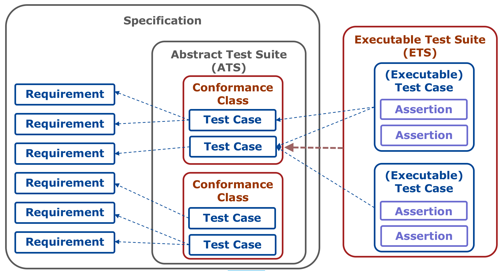

|
ETF |
Developing Executable Test Suites
Status |
in review |
Date |
2017-06-21 |
Description |
This document is a guide on how to develop Executable Test Suites for ETF using the test engines SoapUI, BaseX and the TEAM Engine. |
Target audience |
Everyone planning to develop or edit Executable Test Suites |
Licence |
|
Identifier |
http://docs.etf-validator.net/Developer_manuals/Developing_Executable_Test_Suites.html |
Language |
EN |
Changelog
| Date | Editor | Comments |
|---|---|---|
2016-09-08 |
Clemens Portele |
BaseX documentation created |
2017-06-09 |
Jon Herrmann |
BaseX documentation updated and merged |
2017-06-13 |
Jon Herrmann |
SoapUI documentation |
2017-06-21 |
Jon Herrmann, Clemens Portele |
Revision after review |
About ETF
ETF is an open source testing framework for validating spatial data, metadata and web services in Spatial Data Infrastructures (SDIs). It can be used via a responsive web application or via a REST API.
The design of ETF is driven by three goals: be user-friendly, consistent with the standards and capable of testing all resources in an SDI.
interactive instruments has developed ETF and is the primary maintainer of the software.
1. Introduction
This document is a guide on how to develop Executable Test Suites for ETF using the test engines SoapUI, BaseX and the TEAM Engine.
The concepts in ETF are based on ISO 19105 and the OGC Specification Model. Key concepts introduced by these two standards are Conformance Classes and Executable Test Suites.
A Conformance Class is a set of requirements defined in a specification. To pass the conformance class, a resource claiming conformance with that class must meet all the requirements.
An Executable Test Suite is a collection of tests that validates a resource against all the requirements in the associated Conformance Class.

ETF is built on these concepts as they underpin the standards and specifications that are used in Spatial Data Infrastructures and that are typically tested by validators based on ETF.
The resources that we want to test with ETF have different characteristics.
When testing GML data, test expressions will typically use XPath to express the assertions. Typical challenges in this case are performance for large datasets (10s or 100s of Gigabytes) and testing spatial aspects.
When we test an OGC web service, for example a Web Feature Service, the execution of the tests needs to be dynamic. The capabilities of the service need to be analyzed, test cases and assertions need to be generated based on the analysis of the feature types, their properties, the coordinate reference systems, the stored queries, the filter capabilities supported, etc. As a result, the execution of a test suite is a complex interaction between the validator and the web service and the Executable Test Suite not only needs to test responses from the web service, but also determine from the response what needs to be tested.
To address the different challenges properly, ETF supports different tools ("test engines") to execute Executable Test Suites. Currently supported are the following test engines:
-
SoapUI, a widely used tool for testing web services
-
BaseX, an XML database, for testing sets of XML documents - including very large ones
-
TEAM Engine, the tool used by the OGC CITE tests, to support the modern CITE tests developed using TestNG
The BaseX extension module GmlGeoX extends XQuery to enable testing spatial aspects of GML features (geometry validation, spatial indexing, spatial predicates).
Due to the different characteristics of the test engines, the development of an Executable Test Suite is very different for each test engine.
For each of the supported test engines, ETF has specified a mapping from the concepts of the test engine to the ETF concepts so that test results in ETF are homogenous - whatever test engines are used in a test run.
This guide, therefore, describes how to use the test engines in a way that is consistent with the ETC concepts. It is not a tutorial for the test engines (SoapUI, BaseX, TEAM Engine) or the relevant technologies (XML, XQuery, HTTP, Groovy, etc.). We assume working knowledge with the relevant tools and technologies. We have included links that should help to familiarize yourself with the relevant tools and technologies, where this is needed.
2. Information and concepts used by all Executable Test Suites
2.1. Overview
All Executable Test Suites can make use of and reference generic information items that is used by ETF to organize Executable Test Suites and present test reports to a user.
How these items are referenced in the different types of Executable Test Suites is described in the section for each test engine.
These items are:
-
Collections of multi-lingual message templates for use in test reports for one or more Executable Test Suites
-
Tags that may be associated with an Executable Test Suite to support grouping and filtering
These items that stored as XML documents in the include-metadata
directory of an ETF deployment (see the description of the ETF directory structure).
2.2. Message template bundles
Message templates are collected in an XML document with a root element
etf:TranslationTemplateBundle. The file name must start with the
prefix "TranslationTemplateBundle" and must be located in the directory
include-metadata. The id attribute must be a unique UUID, prefixed with "EID".
generic-ettb.xml
can be used as a starting point for a translation template bundle. Do
not forget to change the id attribute to a different UUID.
|
The template bundle for the BaseX-based tests in the INSPIRE validator is TranslationTemplateBundle-EID70a263c0-0ad7-42f2-9d4d-0d8a4ca71b52.xml.
The template bundle for the SoapUI-based tests in the INSPIRE validator is TranslationTemplateBundle-EIDfadd4929-fa60-4781-b658-703bbfe3f4eb.xml.
Each message template is in an etf:LangTranslationTemplateCollection
element and includes an etf:TranslationTemplate per language for the
same message. The language is encoded in the language attribute using
language codes used in HTTP headers, e.g. "en" for English.
The placeholders are embedded in curly brackets, e.g. "{filename}".
| All names must start with "TR." and may only use the following characters: "a"-"z", "A"-"Z", "0"-"9", ".", "-", "_". The length is restricted to 45 characters. |
The name attribute values of an etf:LangTranslationTemplateCollection element and its etf:TranslationTemplate elements must be identical.
|
<TranslationTemplateBundle xmlns="http://www.interactive-instruments.de/etf/2.0"
xmlns:xsi="http://www.w3.org/2001/XMLSchema-instance"
xsi:schemaLocation="http://www.interactive-instruments.de/etf/2.0 http://resources.etf-validator.net/schema/v2/model/resultSet.xsd"
id="EID27117afb-11aa-4e45-aa3d-0e1e65bdccb8">
<translationTemplateCollections>
<LangTranslationTemplateCollection name="TR.incorrectRoot">
<translationTemplates>
<TranslationTemplate language="en" name="TR.incorrectRoot">XML document '{filename}': The root element is not one of the recognised feature collections: wfs:FeatureCollection (WFS 1.1 or WFS 2.0) or gml:FeatureCollection (GML 3.1 or GML 3.2). The name of the root element is '{elementName}' in namespace '{namespace}'.</TranslationTemplate>
<TranslationTemplate language="de" name="TR.incorrectRoot">XML-Dokument '{filename}': Das Wurzelelement ist keines der erwarteten Feature-Collection-Elemente: wfs:FeatureCollection (WFS 1.1 oder WFS 2.0) oder gml:FeatureCollection (GML 3.1 oder GML 3.2). Der Name des Wurzelelements is '{elementName}' im Namensraum '{namespace}'.</TranslationTemplate>
</translationTemplates>
</LangTranslationTemplateCollection>
</translationTemplateCollections>
</TranslationTemplateBundle>2.3. Tags
Items may be associated with tags. If Executable Test Suites are associated with tags, the ETF web application groups them by tags.
| How Execuable Test Suites are associated with tags differs between test engines and is described in the test engine sections. |
Tags are an XML document with a root element etf:Tag. The file name must start with the prefix "Tag" and must be located in the directory include-metadata. The id attribute must be a unique UUID, prefixed with "EID".
The tag has a label and a description. If a priority value is provided for a tag, the web application sorts the tags in the order of ascending priority values.
The INSPIRE validator uses several tags to organize its Executable Test Suites. One of the tags is:
<Tag xmlns="http://www.interactive-instruments.de/etf/2.0" id="EIDfe1f3796-0ebf-4960-a6f7-f935e087fa4b" xmlns:xsi="http://www.w3.org/2001/XMLSchema-instance" xsi:schemaLocation="http://www.interactive-instruments.de/etf/2.0 http://resources.etf-validator.net/schema/v2/model/resultSet.xsd">
<label>Data Theme: Administrative Units (Data Specification version 3.1)</label>
<description>Tests for conformance classes specific to features of the data theme 'Administrative Units'.</description>
<priority>202</priority>
</Tag>2.4. Test object types
A Test Object Type is a classification of a test object. Every Executable Test Suite in ETF declares which types of test objects it supports. This allows to determine which Executable Test Suites may be included in a test run against a test object. Test object types are structured in a hierarchical vocabulary.
The Test Object Types are used to check whether two or more Executable Test Suites can be executed on the same test object together in one Test Run.
Every test engine supports one or more Test Object Types. The types supported by each test engine are described in the section on the test engines (BaseX, SoapUI). For the TEAM Engine, the applicable types from the other test engines are specified for each TEAM Engine test suite.
2.5. Test item types
Each test step and test assertion is classified depending on the characteristics of the item. As the classification depends on the test engine, the pre-defined test item types for each test engine are specified in the section of the test engine (BaseX, SoapUI). For the TEAM Engine internal test item types are created, but these are not visible to test developers.
2.6. Attachments
Additional files may be "attached" to a test result. These includes log files, statistical information, service requests and responses, etc. The attachments are linked from or embeded in the test reports in HTML to provide additional information about the test run.
The details depend on the test engine and the attachments that may occur for each test engine and are documented in the section of the test engine (BaseX, SoapUI, TEAM Engine).
3. BaseX-based test suites
3.1. Required knowledge
To develop Executable Test Suites for testing XML documents in ETF using BaseX, you should be familiar with:
-
XQuery and XML technologies in general
-
the ETF domain model items
3.2. Development environment
An BaseX Executable Test Suite is typically developed and tested using the BaseX GUI application.
3.2.1. Installation
For guidance on downloading and installing BaseX see the BaseX website. It is recommended to use the same version that is also used by ETF, currently version 8.6.
Two additional modules should be installed in the local BaseX installation as they are frequently used in Executable Test Suites:
-
the standard functx module
-
the GmlGeoX module for spatial extensions
To add the functx module, select "Options", then "Packages…", then "Install from URI…", enter the URI "http://files.basex.org/modules/expath/functx-1.0.xar" and press "OK".
To add the GmlGeoX module,
download
the latest version of the JAR file using etf-public-releases as user
and password. Select again "Options", then "Packages…", then
"Install…" and navigate to the JAR file. Press "Choose".
3.2.2. Executing tests
To execute a test suite against a set of XML documents follow these steps:
-
Load the XML documents into a new database
-
Select "Database" > "New…" in the menu.
-
Select the XML document or the directory with the XML document or a ZIP file with the XML documents.
-
Use a database name that ends in "-0".
-
If necessary, add additional file patterns beside "*.xml".
-
In the tab "Parsing" check "Use internal XML parser".
-
Leave all other options unchanged and press "OK".
-
Open the XQuery document (see below for more information) in the editor.
-
Search for the declaration of the following variables and set their default values:
-
Set
$projDirto the local file path where the project files are located. -
Set
$dbBaseNameto the name of the database with the "-0" suffix. -
Set
$etsFile`to the file path of the `etf:ExecutableTestSuitedocument.Example 4. XQuery declarations of standard variablesdeclare variable $projDir external := "/home/user/Documents/ETF/ets-repository/generic"; declare variable $dbBaseName external := "errors"; declare variable $etsFile external := $projDir || file:dir-separator() || "ets-template-bsxets.xml";
Executing the XQuery should now execute the test suite.
3.2.3. Best practices
During the development of a test suite, it may be handy to compile a special XQuery that
-
loads a test file using the doc() function
-
includes the functions that will be called from expressions in assertions
-
sets the relevant variables used in expressions in assertions
-
adds the expression of a single assertion that should be tested
This approach may speed up testing during the development. For example, loading a test document using the doc() function allows to make immediate changes to a test file without reloading a database.
3.3. Basics
In ETF, sets of XML documents are tested using BaseX, an XML database.
An Executable Test Suite is essentially an XQuery that operates on the set of XML documents under test and returns an XML document with the root element etf:TestTaskResult.
The content model is specified using an XML schema.
The current stable schema is available here and can be used for validating ETF XML structures:
<EtfModelItem xmlns="http://www.interactive-instruments.de/etf/2.0"
xmlns:xsi="http://www.w3.org/2001/XMLSchema-instance"
xsi:schemaLocation="http://www.interactive-instruments.de/etf/2.0 http://resources.etf-validator.net/schema/v2/service/service.xsd" ...>
...
</EtfModelItem>Here is a simple example with one test case result embedding two test assertions results:
<TestTaskResult xmlns="http://www.interactive-instruments.de/etf/2.0"
xmlns:xsi="http://www.w3.org/2001/XMLSchema-instance"
xsi:schemaLocation="http://www.interactive-instruments.de/etf/2.0 http://resources.etf-validator.net/schema/v2/service/service.xsd"
id="EIDc5e50620-5107-4b75-b6c1-74d4465fba0f">
<testObject ref="EID666f71c1-9af3-4040-a21d-190f953725f4"/>
<testModuleResults>
<TestModuleResult id="EIDfdfc25d5-1790-43bd-abb6-2de6263619cc">
<testCaseResults>
<TestCaseResult id="EID3dab6279-f553-4f93-b1bc-b73329fc69c3">
<testStepResults>
<TestStepResult id="EIDffaf6f6a-66f6-4796-8c42-e5f681517c62">
<testAssertionResults>
<TestAssertionResult id="EIDa35d1dd3-7cc2-41c7-9b2b-f60df48ffabb">
<parent ref="EIDffaf6f6a-66f6-4796-8c42-e5f681517c62"/>
<resultedFrom ref="EIDcab35f1a-6292-44b9-ae2c-9ec62fc0f4b6"/>
<startTimestamp>2016-09-05T13:10:24Z</startTimestamp>
<duration>0</duration>
<status>PASSED</status>
</TestAssertionResult>
<TestAssertionResult id="EIDc18b01ff-f544-4d0e-9a8f-ef3874abd43f">
<messages>
<message ref="TR.filesWithErrors">
<translationArguments>
<argument token="count">1</argument>
</translationArguments>
</message>
<message ref="TR.incorrectRoot">
<translationArguments>
<argument token="filename">ps-root.xml</argument>
<argument token="elementName">FeatureCollection</argument>
<argument token="namespace">http://www.opengis.net/wfs</argument>
</translationArguments>
</message>
</messages>
<parent ref="EIDffaf6f6a-66f6-4796-8c42-e5f681517c62"/>
<resultedFrom ref="EID928d8204-3015-4811-82fd-f4779b35385b"/>
<startTimestamp>2016-09-05T13:10:24Z</startTimestamp>
<duration>1</duration>
<status>FAILED</status>
</TestAssertionResult>
</testAssertionResults>
<parent ref="EID3dab6279-f553-4f93-b1bc-b73329fc69c3"/>
<resultedFrom ref="EIDc177cf64-3a66-4ac4-92b9-61207aab8007"/>
<startTimestamp>2016-09-05T13:10:24Z</startTimestamp>
<duration>1</duration>
<status>FAILED</status>
</TestStepResult>
</testStepResults>
<parent ref="EIDfdfc25d5-1790-43bd-abb6-2de6263619cc"/>
<resultedFrom ref="EIDf66872d4-3a1f-4581-a501-94200219bf13"/>
<startTimestamp>2016-09-05T13:10:24Z</startTimestamp>
<duration>1</duration>
<status>FAILED</status>
</TestCaseResult>
</testCaseResults>
<parent ref="EIDc5e50620-5107-4b75-b6c1-74d4465fba0f"/>
<resultedFrom ref="EID8e96257c-ae42-4123-b298-b8c5eda3a027"/>
<startTimestamp>2016-09-05T13:10:24Z</startTimestamp>
<duration>1</duration>
<status>FAILED</status>
</TestModuleResult>
</testModuleResults>
<attachments>
<Attachment id="EIDc5e50620-5111-4bc5-b6c1-74d4465fbb23">
<label>Log file</label>
<encoding>UTF-8</encoding>
<mimeType>text/plain</mimeType>
<referencedData href="file://local/log.txt"/>
</Attachment>
</attachments>
<resultedFrom ref="EID545f9e49-009b-4114-9333-7ca26413b5d4"/>
<startTimestamp>2016-09-05T13:10:24Z</startTimestamp>
<duration>1</duration>
<status>FAILED</status>
</TestTaskResult>The document is based on the nested structures of test modules, test cases, test steps and test assertions. For each of these result items some basic information is provided:
-
An identifier in an attribute
id. The value must be a UUID with a prefix "EID", e.g. "EIDc5e50620-5107-4b75-b6c1-74d4465fba0f".In XQueries in BaseX, new UUID values can be created using
uuid:randomUUID()where the uuid namespace is declared usingdeclare namespace uuid='java.util.UUID';. -
Each result item, except the top level test task result (representing the result of executing the test suite) has a
etf:parentchild element with arefattribute. The value of therefattribute is theidof the ancestor result item.In this packaging of the result items the refvalue is redundant as it could be derived from the nested document structure, but it is required so that the result items can also be stored separately without losing the relationships between the result items. -
The status of the result item is given in a child element
etf:status. For every level except the lowest level (the test assertions), the status must be derived automatically from the status values of the next lower level where the following XQuery function could be used ($statusValuesis the sequence of status values from the lower level result items):declare function local:status($statusValues as xs:string*) as xs:string { if ($statusValues ='FAILED') then 'FAILED' else if ($statusValues ='SKIPPED') then 'SKIPPED' else if ($statusValues ='WARNING') then 'WARNING' else if ($statusValues ='INFO') then 'INFO' else if ($statusValues ='PASSED_MANUAL') then 'PASSED_MANUAL' else if ($statusValues ='PASSED') then 'PASSED' else if ($statusValues ='NOT_APPLICABLE') then 'NOT_APPLICABLE' else 'UNDEFINED' }; -
A time stamp when the execution of the test item was started in child element
etf:startTimestamp. The value is expected to include seconds and be in the UTC timezone. -
The duration of the execution in milliseconds (an integer) in child element
etf:duration. -
A reference to the corresponding test item for which this is a result is included in attribute
refin child elementetf:resultedFrom. Again,refis the id of that test item. Anetf:TestAssertionResultwill always reference anetf: TestAssertion, and so on. The test items and their XML representation are discussed below.
The etf:TestTaskResult may have additional child elements (more
information is provided in separate pages documenting more advanced
features), but it must have a child element etf:testObject that
references the etf:TestObject that represents the XML documents under
test. As this identifier is assigned by ETF, it is passed to the XQuery
as an external variable $testObjectId.
Test assertions may include messages. This is at least the case for
failed assertions or assertions with warnings or other information.
These are provided embedded in a child element etf:messages where each
message has the following structure (to support translation of messages
into different languages:
-
A
refattribute that includes the name of a message template. All template names start with "TR.". Message templates and their XML representation are discussed below. They are basically a set of text strings (one for each supported language) which include placeholders. -
For each of the placeholders an
etf:argumentelement is provided inside of anetf:translationArgumentelement. Thetokenattribute is the name of the placeholder and the text node is the value the placeholder should be replace with in the message.
3.4. Typical setup
The BaseX test driver in ETF expects that each Executable Test Suite is
specified using an XML document described in the next section. The
document includes a file reference to the XQuery to be executed. The
BaseX test driver of ETF will execute this XQuery and pass the file
reference to the Executable Test Suite document in an external variable
$etsFile.
The XQuery will process the Executable Test Suite document and execute
each test assertion and return the XML document with the root element
etf:TestTaskResult as described above.
The details are discussed in the following sections.
3.5. XML document of an Executable Test Suite
A document specifying an Executable Test Suite is an XML document with
the root element etf:ExecutableTestSuite. The content model is
specified using an
XML
schema.
In order to enable that ETF can identify all Executable Test Suite documents (and monitor them for changes) without analysing the file content, the file names have to use a suffix "-bsxets.xml".
Here is a simple example:
<?xml version="1.0" encoding="utf-8"?>
<ExecutableTestSuite xmlns="http://www.interactive-instruments.de/etf/2.0" xmlns:xsi="http://www.w3.org/2001/XMLSchema-instance"
xsi:schemaLocation="http://www.interactive-instruments.de/etf/2.0 http://services.interactive-instruments.de/etf/schema/model/resultSet.xsd" id="EID545f9e49-009b-4114-9333-7ca26413b5d4">
<itemHash>bQ==</itemHash>
<remoteResource>http://github.com/inspire-eu-validation/ets-repository/data-encoding/inspire-gml</remoteResource>
<localPath>/auto</localPath>
<label>Conformance class: INSPIRE GML encoding</label>
<description><![CDATA[This test suite examines GML documents against basic requirements for the GML encoding for spatial data sets in INSPIRE. This only covers application-schema-independent, generic requirements. Requirements related to specific application schemas are part of conformance classes with a dependency on this conformance class.<br/><br/>
<b>This is a draft version. It has limitations and is expected to contain errors.</b> Please report any issues or problems <a href="https://github.com/interactive-instruments/ets-repository/issues" target="_blank">in GitHub</a>.<br/><br/>
Known limitations are documented in the description of the applicable test case or test assertion.<br/><br/>
Source: <a href="http://inspire.ec.europa.eu/id/ats/data-encoding/3.3/inspire-gml" target="_blank">Conformance Class 'INSPIRE GML encoding'</a><br/><br/>
Pre-requisite conformance classes:
<ul><li>Conformance Class 'GML 3.2 documents [OGC]'</li></ul>]]></description>
<reference>../../inspire-bsxets.xq</reference>
<version>0.1.0</version>
<author>interactive instruments GmbH</author>
<creationDate>2016-08-15T00:00:00Z</creationDate>
<lastEditor>interactive instruments GmbH</lastEditor>
<lastUpdateDate>2016-08-15T00:00:00Z</lastUpdateDate>
<testDriver ref="EID4dddc9e2-1b21-40b7-af70-6a2d156ad130"/>
<translationTemplateBundle ref="EID70a263c0-0ad7-42f2-9d4d-0d8a4ca71b52"/>
<supportedTestObjectTypes>
<testObjectType ref="EIDe1d4a306-7a78-4a3b-ae2d-cf5f0810853e"/>
</supportedTestObjectTypes>
<testModules>
<TestModule id="EID8e96257c-ae42-4123-b298-b8c5eda3a027">
<label>IGNORE</label>
<description>IGNORE</description>
<parent ref="EID545f9e49-009b-4114-9333-7ca26413b5d4"/>
<testCases>
<TestCase id="EIDf66872d4-3a1f-4581-a501-94200219bf13">
<label>Basic tests</label>
<description>Verify that all documents contain GML features and use the expected character encoding.</description>
<parent ref="EID8e96257c-ae42-4123-b298-b8c5eda3a027"/>
<testSteps>
<TestStep id="EIDc177cf64-3a66-4ac4-92b9-61207aab8007">
<label>IGNORE</label>
<description>IGNORE</description>
<parent ref="EIDf66872d4-3a1f-4581-a501-94200219bf13"/>
<statementForExecution>not applicable</statementForExecution>
<testItemType ref="EIDf483e8e8-06b9-4900-ab36-adad0d7f22f0"/>
<testAssertions>
<TestAssertion id="EIDcab35f1a-6292-44b9-ae2c-9ec62fc0f4b6">
<label>gml.a.1: Errors loading the XML documents</label>
<description><![CDATA[Report errors that occurred during loading the documents in the test object. A typical example is an XML document that is not well-formed and therefore cannot be processed.]]></description>
<parent ref="EIDc177cf64-3a66-4ac4-92b9-61207aab8007"/>
<expectedResult>NOT_APPLICABLE</expectedResult>
<expression>if (not($validationErrors)) then 'PASSED' else ('FAILED', for $error in $validationErrors return (local:addMessage('TR.valdiationError', map { 'text': $error })))</expression>
<testItemType ref="EIDf0edc596-49d2-48d6-a1a1-1ac581dcde0a"/>
<translationTemplates>
<translationTemplate ref="TR.valdiationError"/>
</translationTemplates>
</TestAssertion>
<TestAssertion id="EID928d8204-3015-4811-82fd-f4779b35385b">
<label>gml.a.2: Document root element</label>
<description><![CDATA[Check for each XML document that the root element is a GML feature or a GML feature collection.<br/><br/>
For feature collections the following root elements are recognised:
<ul>
<li>wfs:FeatureCollection (WFS 2.0),</li>
<li>gml:FeatureCollection (GML 3.2),</li>
<li>base:SpatialDataSet (INSPIRE Base 3.2 or 3.3).</li>
</ul>
This test is a pre-condition to identify the INSPIRE features in the test object.<br/><br/>
Relevant requirements and recommendations:
<ul><li>Recommendation 11 - For the exchange of spatial objects in GML, an XML document with a FeatureCollection root element from ISO 19142:2010 (WFS 2.0) should be used.</li></ul>
<b>Known limitations:</b>
<ul>
<li>Currently only feature collections are recognized as the test engine BaseX is not schema-aware. A new extension function is required to identify all feature elements.</li>
</ul>
Source: <a href="" target="_blank">Abstract Test Case 'Basic test'</a>]]></description>
<parent ref="EIDc177cf64-3a66-4ac4-92b9-61207aab8007"/>
<expectedResult>NOT_APPLICABLE</expectedResult>
<expression>
let $filesWithErrors := $db[not(wfs:FeatureCollection or gml:FeatureCollection or base32:SpatialDataSet or base:SpatialDataSet or gml:AbstractFeature)][position() le $limitErrors]
return
(if ($filesWithErrors) then 'FAILED' else 'PASSED',
local:error-statistics('TR.filesWithErrors', count($filesWithErrors)),
for $file in $filesWithErrors
order by local:filename($file)
let $root := $file/element()
return
local:addMessage('TR.incorrectRoot', map { 'filename': local:filename($root), 'elementName': local-name($root), 'namespace': namespace-uri($root) }))
</expression>
<testItemType ref="EIDf0edc596-49d2-48d6-a1a1-1ac581dcde0a"/>
<translationTemplates>
<translationTemplate ref="TR.incorrectRoot"/>
<translationTemplate ref="TR.filesWithErrors"/>
</translationTemplates>
</TestAssertion>
</testAssertions>
</TestStep>
</testSteps>
</TestCase>
</testCases>
</TestModule>
</testModules>
</ExecutableTestSuite>Let’s go through the document in the example in detail:
-
All items that are stored by ETF and may be referenced include an attribute
idwhere the value must be a UUID with a prefix "EID". There are many ways to generate a pool of UUIDs when drafting an Executable Test Suite, including web sites like https://www.uuidgenerator.net/. -
All items include the properties
etf:labelandetf:description. It is essential to provide these elements in order to generate test reports that are useful and understandable. The description may include HTML markup that will be used when generating test reports in HTML; the markup must encoded or embedded in a CDATA section. -
All items, except the top level test suite, has a
etf:parentchild element with arefattribute. The value of therefattribute is theidof the ancestor item. Like in the case of the test result in the section "Introduction", therefvalue is redundant as it could be derived from the nested document structure, but it is required so that the items can also be handled separately within ETF without losing the relationships between the items. -
The elements
etf:itemHashandetf:localPathare used by ETF internally. Use "bQ==" and "/auto" as initial values respectively. -
The element
etf:remoteResourcemay be included to provide a link to a webpage where additional information about the test suite can be found. -
The element
etf:referenceis a local file reference to the XQuery to be executed by the ETF test driver for BaseX. -
The elements
etf:version,etf:author,etf:creationDate,etf:lastEditorandetf:lastUpdateDateare used to provide metadata about this version of the Executable Test Suite. The 'date' values are expected to include time and be in the UTC timezone. -
The element
etf:testDriverreferences the test driver for BaseX. The current test driver has a fixed identifier "EID4dddc9e2-1b21-40b7-af70-6a2d156ad130". -
The element
etf:translationTemplateBundlereferences anetf:TranslationTemplateBundleobject containing all linguistic text in one or more languages used in an Executable Test Suite. The structure of the document is described below. Multiple Executable Test Suites may share a single bundle. A bundle is typically managed as a separate XML document located the sub directoryinclude-metadata. -
The element
etf:supportedTestObjectTypesincludes references to theetf:TestObjectType`s that this Executable Test Suite supports, i.e. the Executable Test Suite can be executed on test objects that are of one the referenced types. For each supported `etf:TestObjectTypean elementetf:testObjectTypeis created. -
Test modules, test cases, test steps and test assertions are described in the document where the nesting represents the structure of the test items. The example above has a single test module with a single test case with a single test step and two test assertions.
-
For BaseX tests the concept of test steps is usually not applicable and there will be exactly one test step for each test case. If label and description of the test step are set to the values "IGNORE" the superfluous test step will not be shown in test reports.
-
Often the additional structure level of test modules is not needed or used, i.e. there will be exactly one test module in the test suite. Again, if label and description of the test module are set to the values "IGNORE" the superfluous test module will not be shown in test reports.
-
The elements
etf:statementForExecutionandetf:testItemTypein test steps are not relevant for tests using BaseX, but must be provided.etf:statementForExecutionmust be a value that is not empty; a typical approach is to use "not applicable" as the value. Foretf:testItemType, reference "EIDf483e8e8-06b9-4900-ab36-adad0d7f22f0", which is a pre-definedetf:TestItemTypefor superfluous test steps in BaseX. -
For test assertions the elements discussed in the next bullet items need to be provided.
-
The element
etf:expectedResultis not relevant for tests using BaseX, but must be provided. Use "NOT_APPLICABLE" as the value. -
The element
etf:testItemTypeidentifies the type of the test assertion. Three values are pre-defined for BaseX tests: -
"EIDf0edc596-49d2-48d6-a1a1-1ac581dcde0a" for assertions where the element
etf:expressioncontains an XQuery fragment that has to be executed to determine the result. -
"EIDb48eeaa3-6a74-414a-879c-1dc708017e11" for assertions where the element
etf:expressioncan be ignored and the result status will always be 'PASSED_MANUAL' indicating that the assertion needs to be checked manually by an expert. -
"EID92f22a19-2ec2-43f0-8971-c2da3eaafcd2" for assertions that are disabled, e.g. during the drafting phase or due to known issues that have to be fixed.
-
In case of an assertion of type "EIDf0edc596-49d2-48d6-a1a1-1ac581dcde0a", the element
etf:expressioncontains an XQuery fragment that will be executed to determine the result and any messages for the user. The rules for these expressions are discussed in the next section about the XQuery document. -
The element
etf:translationTemplateslists all message templates that may be created by the test assertion as part of the execution of the XQuery fragment.
3.6. The XQuery document
As explained in the sections above, the XQuery has to process the
etf:ExecutableTestSuite document, execute queries based on the
expressions for each XQuery assertion and return a etf:TestTaskResult
document capturing the result of the test execution.
The ETF test driver for BaseX passes the following external variables to the XQuery, which must be declared in the XQuery and which are necessary to enable the execution of the test suite:
-
$testObjectIdis the id of the test object on which the test suite is to be executed. This information is required to construct theetf:TestTaskResultdocument. -
$testTaskResultIdis the id of the result, i.e. theetf:TestTaskResultelement. -
etf:$projDiris the local path to the project directory that is monitored by ETF and which contains all necessary files including theetf:ExecutableTestSuitedocument, the XQuery document, theetf:TranslationTemplateBundledocument, etc. -
etf:$tmpDiris the local path to a directory where additional files may be written during execution. This is discussed in the section on attachements below. -
ETF loads all XML documents under test into one or more BaseX databases. Typically it will be one database, but for very large sets of XML documents the documents will distributed into several databases due to limitations in the number of XML nodes per database. In this case, the name of the databases will follow the pattern
concat($dbBaseName,'-',$i)where$iis an integer between0and$dbCount-1. -
$etsFileis the local path to the XML document of the Executable Test Suite to be executed. -
$validationErrorsis a string with any errors that occured during loading the XML documents under test into BaseX. Only documents with file extensions "xml" and "gml" are processed. Files that are not well-formed XML documents are excluded. If schema validation against a pre-defined schema is activated, only valid schemas are loaded. Any errors detected in the files by the XML parser are reported in this variable. This information may be used in a test assertion.
How the XQuery processes the etf:ExecutableTestSuite document,
executes queries for each XQuery assertion and generates the
etf:TestTaskResult document is up to the developer of the Executable
Test Suite, but the standard approach is the following:
-
The values of the variables are checked. In case of an error an exception is raised.
-
The database(s) are opened.
-
The items to inspect, e.g. the elements representing GML features, are identified.
-
The Executable Test Suite document
$etsFileis loaded. -
A single XQuery that will execute the complete test suite using the eval() function of XQuery is compiled. This approach is necessary as the XQuery fragments in the
etf:expressionelements in the test assertions need to be executed. This single XQuery consists of a fixed prolog consisting of -
namespace / module / variable declarations and functions used in
etf:expressionelements (this typically is read from a separate file), -
additional preparatory statements and
-
the
etf:TestTaskResultXML structure based on the test modules, test cases, test step and test assertions in the Executable Test Suite document. -
Try/catch blocks are used frequently to contain error situations as good as possible, including errors in the XQuery fragments in
etf:expressionelements. -
This XQuery is executed using eval() and the result is returned to the ETF test driver.
| A generic template for reuse is available in the directory 'generic'. |
This generic template is designed for testing features (however, the basic structure is the same, if metadata records or other XML elements are subject to the tests). The generic template consists of
-
a generic XQuery prolog for the dynamic XQuery that is compiled by ets-generic-bsxets.xq,
-
additional preparatory statements that add a statistics table with the number of features per feature type is adds features with geometries to a spatial index to support spatial queries in assertions using the GmlGeoX module),
In this generic XQuery, the following variables are passed to the
dynamic XQuery, i.e. these variables are available in the
etf:expression fragments:
-
$db: the sequence of XML document nodes of the XML documents under test -
$features: the sequence of GML feature elements in the XML documents under test -
$idMap: a map of the gml:id values of the features -
$testObjectId: the id of the test object in ETF -
$logFile: the name of the log file in the tmp directory -
$statFile: the name of the file with the statistical table in the tmp directory -
$limitErrors: to avoid memory and runtime issues in cases with millions of errors it is recommended to limit the number of errors that is processed for each assertion; by default '1000' is used -
$validationErrors: the list of errors that occured when loading the XML documents under test into the BaseX databases
Currently the XQuery fragment in an etf:expression in each assertion
has to return a sequence of items, where the first item is a string with
the status, e.g. 'PASSED' or 'FAILED'. Any additional items must be
etf:message elements.
In the INSPIRE case, there are three different XQuery options that are used. In Exectuable Test Suites that
-
… test features (elements substitutable for gml:AbstractFeature) and which include tests calling functions of the GmlGeoX library, inspire-bsxets.xq is used;
-
… test features (elements substitutable for gml:AbstractFeature), but without using the GmlGeoX library, inspire-noggeo-bsxets.xq is used;
-
… test metadata records (gmd:MD_Metadata), inspire-md-bsxets.xq is used.
|
The current mechanism will in the future be replaced by a new BaseX module implementing a listener similar to the following XQuery functions currently defined in generic-query-prolog.xq:
Once the listener is implemented, the whole generation of the
|
3.7. Testing spatial aspects
3.7.1. Overview
The GmlGeoX extension module extends XQuery with additional capabilities:
-
Spatial indexing of features
-
Caching of feature geometries
-
Validation of feature geometries
-
Evaluation of topological predicates
The complete documentation of the module is available in the JavaDoc description.
3.7.2. Spatial indexing
Feature geometries can be indexed using an r*-tree. To index a feature execute ggeo:index( int pre, String dbName, String id, Node xmlGeometry ).
-
'pre' is the index of the feature node in the database table that can be obtained using
db:node-pre($node). It is essential that the XML database is not updated as this will change the pre values. -
'dbName' is the name of the database that contains the feature node and can be obtained using
db:name($node). -
'id' is a String id used for the geometry cache. Typically the gml:id of the feature is used.
-
'xmlGeometry' is the XML node with the GML geometry element to index.
To index a node list of features ($features) simply execute (where ns:geometry is the primary geometry property):
let $dummy := for $feature in $features
return ggeo:index(db:node-pre($feature),db:name($feature),$feature/@gml:id,$feature/ns:geometry/*[1])Once the index has been established, it can be searched to find all features whose bounding box overlaps with another bounding box. The ggeo:search( number minx, number miny, number maxx, number maxy ) function returns a node list of indexed features overlapping with the search bounding box:
let $env := ggeo:envelope($candidate_geometry)
let $overlapping_features := ggeo:search($env[1],$env[2],$env[3],$env[4])let $geometries :=
for $feature in ggeo:search($env[1],$env[2],$env[3],$env[4])
return ggeo:getGeometry($feature/@gml:id,$feature/ns:geometry/*[1])3.7.3. Geometry caching
The parsed geometries are cached during indexing to avoid multiple computations of the geometries from the XML. The cache size can be set before the indexing is started using ggeo:cacheSize( int size ), the default size is 100000 geometries. The cache is transparent to the user of the GmlGeoX module.
Geometries are accessed from the index using geo:getGeometry( String id, Node xmlGeometry ). The id is specified during the indexing, typically the gml:id attribute of the GML feature is used. If the geometry with the id is currently in the cache, it is returned. Otherwise the geometry is computed from the XML and put into the cache.
3.7.4. Geometry Validation
Validation of GML geometry elements within a given XML node is basically a SAX-based scan for recognized GML geometry elements, and subsequent validation of these elements. The default set of recognized element names is a subset of GML. Functions offered by the module can be used to modify this set within an XQuery. See the test project developer documentation for this module for further details.
In this XQuery expression, the feature geometries are all validated (test mask '110' means general validation and polygon patch connectivity are evaluated) and error messages returned from the GmlGeoX module are included in the test result.
let $messages := for $feature in $features
return
try {
let $vr := ggeo:validateAndReport($feature,'110')
return
if (xs:boolean($vr/ggeo:isValid)) then ()
else
for $message in $vr/ggeo:message[@type='ERROR']
return
local:addMessage('TR.invalidGeometry', map { 'filename': local:filename($feature), 'featureType': local-name($feature), 'gmlid': string($feature/@gml:id), 'text': $message/text() })
} catch * {
return () (: do not raise an error for parsing exceptions, if these are tested already elsewhere :)
}
return
(if ($messages) then 'FAILED' else 'PASSED',
local:error-statistics('TR.featuresWithErrors', count(fn:distinct-values($messages//etf:argument[@token='gmlid']/text()))),
$messages)3.7.5. Evaluation of topological predicates
Topological predicates between two geometries are evaluated using the JTS library. The standard predicates specified in the OGC Simple Feature standard are supported. See the test project developer documentation for this module for further details.
In this XQuery expression, the feature geometries are all evaluated to determine overlaps. This assumes that all features have surface geometries.
let $messages :=
(for $candidate in $features
return
try {
let $candidate_geometry := ggeo:getGeometry($candidate/@gml:id,$candidate/*:geometry/*[1])
let $env := ggeo:envelope($candidate_geometry)
let $other_features := ggeo:search($env[1],$env[2],$env[3],$env[4])
for $feature in $other_features[not (@gml:id = $candidate/@gml:id)]
order by $candidate/@gml:id, $feature/@gml:id
return
try {
let $other_geometry := ggeo:getGeometry($feature/@gml:id,$feature/*:geometry/*[1])
let $check := ggeo:relate($candidate_geometry, $other_geometry, 'F********')
return
if ($check) then ()
else
let $intersection := string(ggeo:intersection($candidate_geometry, $other_geometry))
let $polygons := functx:get-matches($intersection,'POLYGON\s?\(\s?\([\d,\.\s]+\)\s?\)')[fn:string-length(.)>0]
return local:addMessage('TR.Overlap', map { 'filename': local:filename($candidate), 'featureType' : local-name($candidate), 'gmlid': string($candidate/@gml:id), 'gmlid2': string($feature/@gml:id), 'sharedArea': fn:string-join($polygons, ', ') })
} catch * {
return () (: do not raise an error for parsing exceptions, if these are tested already elsewhere :)
}
} catch * {
return () (: do not raise an error for parsing exceptions, if these are tested already elsewhere :)
}
)[position() le $limitErrors]
return
(if ($messages) then 'FAILED' else 'PASSED',
local:error-statistics('TR.featuresWithErrors', count(fn:distinct-values($messages//etf:argument[@token='gmlid']/text()))),
$messages)3.7.6. Known limitations
The implementation of the GmlGeoX module depends to a large extent on the deegree framework. The default geometry implementation of deegree does not support parsing all GML types, primarily the GML 3.3 types. Also, in a number of cases spatial operations are not supported for parsed geometries. This is primarily due to the fact that deegree relies on JTS to perform these operations, and that therefore the geometries must be simplified/linearized - which is not implemented for all geometry types that can be parsed by deegree. There is even a case where an incomplete JTS representations of a deegree geometry is accepted and used for spatial operations (for a surface with multiple polygon patches only the first is used).
As a result, a test developer of this module must be very careful regarding which geometry types are supported for processing, and whether the computation is robust and exact or not. Please consult the JavaDoc for additional details.
For the spatial relationship operators, this page in the test project developer manual documents which geometry types are supported and which are not. The page also has information, which geometry types are simplified/linearized automatically by the module.
3.8. Parameters
Parameters for each Exectuable Test Suite may be declared as part of the
etf:ExecutableTestSuite document. The ETF web application will include
these parameters in the dialog when a test run is started.
The typical parameters for tests on sets of XML documents are:
-
files_to_test: A regular expression. All files in the test object where the file name matches the regular expression will be check in the test, all other will be excluded. The default value '.*' matches all files. -
tests_to_execute: A regular expression. All test assertions in the executable test suite where the label matches the regular expression will be used in the test run, all other will be skipped. The default value '.*' matches all test assertions.
Here is the XML snippet for these parameters:
<ParameterList name="ETF Standard Parameters for XML test objects">
<parameter name="files_to_test" required="true">
<defaultValue>.*</defaultValue>
<description ref="TR.filesToTest"/>
<allowedValues>.*</allowedValues>
<type>string</type>
</parameter>
<parameter name="tests_to_execute" required="false">
<defaultValue>.*</defaultValue>
<description ref="TR.testsToExecute"/>
<allowedValues>.*</allowedValues>
<type>string</type>
</parameter>
</ParameterList>3.9. Test Object Types
3.9.1. Overview
This section lists all Test Object Types that are pre-defined in the BaseX test driver.
For each Test Object Type, the following information is provided:
-
a description
-
the ID that must be used to reference the Test Object Type from an Executable Test Suite
-
the parent Test Object Type in the hierarchy; for root nodes "-" is shown
-
an XPath expression that can be used to detect a Test Object Type (for XML documents), if one exists
In future versions of ETF it is planned that new Test Object Types may
be specified by a test developer defined and declared in XML in the
include-metadata directory.
|
3.9.2. Set of documents
A set of documents.
- ID
-
EIDbec4dd69-72b9-498e-a693-88e3d59d2552
- Parent
-
-
- XPath
-
-
3.9.3. Set of XML documents
A set of XML documents.
- ID
-
EID810fce18-4bf5-4c6c-a972-6962bbe3b76b
- Parent
- XPath
-
-
3.9.4. Metadata records
A set of XML documents. Each document contains one or more gmd:MD_Metadata elements.
- ID
-
EID5a60dded-0cb0-4977-9b06-16c6c2321d2e
- Parent
- XPath
-
/*[local-name() = 'GetRecordsResponse' and starts-with(namespace-uri() = 'http://www.opengis.net/cat/csw/')] | /*[local-name() = 'MD_Metadata' and namespace-uri() = 'http://www.isotc211.org/2005/gmd']
3.9.5. GML feature collections
A set of XML documents. Each document contains a GML feature collection.
- ID
-
EIDe1d4a306-7a78-4a3b-ae2d-cf5f0810853e
- Parent
- XPath
-
-
3.9.6. WFS 2.0 feature collections
A set of XML documents. Each document contains a WFS 2.0 feature collection.
- ID
-
EIDa8a1b437-0ebf-454c-8204-bcf0b8548d8c
- Parent
- XPath
-
/*[local-name() = 'FeatureCollection' and namespace-uri() = 'http://www.opengis.net/wfs/2.0']
3.9.7. GML 3.2 feature collections
A set of XML documents. Each document contains a GML 3.2 feature collection.
- ID
-
EIDc8aaacd7-df33-4d64-89af-fabeae63a958
- Parent
- XPath
-
/*[local-name() = 'FeatureCollection' and namespace-uri() = 'http://www.opengis.net/gml/3.2']
3.9.8. GML 2.1/GML 3.1 feature collections
A set of XML documents. Each document contains a GML 2.1 or GML 3.1 feature collection.
- ID
-
EID123b2f9b-c9f4-4379-8bf1-e9a656a14bd0
- Parent
- XPath
-
/*[local-name() = 'FeatureCollection' and namespace-uri() = 'http://www.opengis.net/gml']
3.9.9. INSPIRE SpatialDataSet documents
A set of XML documents. Each document contains an INSPIRE SpatialDataSet.
- ID
-
EID057d7919-d7b8-4d77-adb8-0d3118b3d220
- Parent
- XPath
-
/*[local-name() = 'SpatialDataSet' and starts-with(namespace-uri(), 'http://inspire.ec.europa.eu/schemas/base/')]
3.9.10. CityGML 2.0 CityModel documents
A set of XML documents. Each document contains a CityGML 2.0 CityModel.
- ID
-
EID3e3639b1-f6b7-4d62-9160-963cfb2ea300
- Parent
- XPath
-
/*[local-name() = 'CityModel' and namespace-uri() = 'http://www.opengis.net/citygml/2.0']
3.9.11. CityGML 1.0 CityModel documents
A set of XML documents. Each document contains a CityGML 1.0 CityModel.
- ID
-
EIDd9371e42-2bf4-420c-84a5-4ab9055a8706
- Parent
- XPath
-
/*[local-name() = 'CityModel' and namespace-uri() = 'http://www.opengis.net/citygml/1.0']
3.10. Test Item Types
3.10.1. Overview
This section lists all Test Item Types that are pre-defined in the BaseX test driver.
For each Test Item Type, the following information is provided:
-
a description
-
the ID that must be used to reference the Test Item Type from a test step or test assertion
-
whether the type is applicable to test steps or test assertions
3.10.2. Dummy Test Step
In BaseX-based Executable Test Suites the concept of test steps is not used. A dummy test step, which is suppressed in test reports, is therefore created and associated with this test item type.
- ID
-
EIDf483e8e8-06b9-4900-ab36-adad0d7f22f0
- Item
-
Test Step
3.10.3. XQuery
The element etf:expression in a test assertion contains an XQuery fragment that is executed to determine the result.
- ID
-
EIDf0edc596-49d2-48d6-a1a1-1ac581dcde0a
- Item
-
Test Assertion
3.10.4. Manual review
The element etf:expression in a test assertion is ignored and the assertion result status is always 'PASSED_MANUAL' indicating that a manual review from an expert is required. The review must be specified in the description of the test assertion.
- ID
-
EIDb48eeaa3-6a74-414a-879c-1dc708017e11
- Item
-
Test Assertion
3.10.5. Disabled
The element etf:expression in a test assertion is ignored and the assertion result status is always 'NOT_APPLICABLE'. The test assertion is disabled. This type should be used only temporarily to disable a test assertion with known issues.
- ID
-
EID92f22a19-2ec2-43f0-8971-c2da3eaafcd2
- Item
-
Test Assertion
3.11. Dependencies
Executable Test Suites may depend on other Executable Test Suites. This dependency has two effects. Assume we have three test suites where test suite A depends on test suite B which in turn depends on test suite C.
-
If a user starts a test run for suite A on a set of XML documents, the test run will first test the XML documents against test suite C, then against test suite B and finally test suite A.
-
If a test suite fails, all dependent test suites will still be executed
-
in order to provide a complete picture. Otherwise a small error in a test suite for some basic tests would block all further tests. For example, if test suite B fails, test suite A will still be executed.
-
-
The user will be prompted to set parameters for test suite A, which will also be passed to test suite B and C. If test suite B or C declare different parameters than test suite A, the default values for these parameters will be used. Undefined parameters will be ignored.
In addition, within a test suite, dependencies may also be declared between test cases from the same test suite. Again, dependent test cases will be skipped, if a test case fails. With test cases dependencies, it is the responsibility of the developers to ensure that test cases are executed in a sequence that is consistent with the dependencies.
Here are examples how dependencies are declared in XML in an
etf:ExecutableTestSuite document.
<ExecutableTestSuite ...>
...
<dependencies>
<executableTestSuite ref="EID545f9e49-009b-4114-9333-7ca26413b5d4"/>
</dependencies>
...
</ExecutableTestSuite><ExecutableTestSuite ...>
...
<TestCase ...>
...
<dependencies>
<testCase ref="EID2ee0045f-cf8d-4979-9d7d-76cb465a0314"/>
</dependencies>
...
<TestCase ...>
...
</ExecutableTestSuite>The Executable Test Suite for the Conformance Class "INSPIRE Profile based on EN ISO 19115 and EN ISO 19119" in INSPIRE includes both kinds of dependencies.
3.12. Tags
To associate an Executable Test Suite with a tag, the tag is referenced from the XML document of the test suite.
The tag element in the following snippet associates the tag with id EID7f57420f-b228-41ae-9467-86e7ffef6e7e with the test suite:
<ExecutableTestSuite ...>
...
<tags>
<tag ref="EID7f57420f-b228-41ae-9467-86e7ffef6e7e"/>
</tags>
...
</ExecutableTestSuite>The tag is declared in XML in a separate document, in the
include-metadata directory.
3.13. Statistical information
If a test result includes an attachment with the type "StatisticalReport", a statistical table is included in the test report. The root element must be an etf:StatisticalReportTable and all etf:entry elements are shown - the value before the semicolon in a column "Type" (feature type or metadata record type) and the value after the semicolon in a column "Count" (number of features or metadata records of that type).
<StatisticalReportTable xmlns="http://www.interactive-instruments.de/etf/2.0">
<type ref="EID242272e0-3f0a-4e9c-9643-657c4d6d304a"/>
<entries>
<entry>all; 10</entry>
<entry>dataset; 5</entry>
<entry>service; 5</entry>
</entries>
</StatisticalReportTable>3.14. Attachments
An Executable Test Suite may record additional information to a test result as attachments. In the case of tests on XML documents, these are typically the following:
-
A log file that includes the information that the XQuery logs using the log() function. If the
typeattribute is set to "LogFile", the information will be included in the HTML test report. -
A file with statistical information of the content of the XML documents. If the
typeattribute is set to "StatisticalReport", the information will be included in the HTML test report. -
A file with the dynamic XQuery, which may help with debugging in case of any errors.
Attachments are written to the temporary directory (variable $tmpDir)
and the links to them are included in the etf:TestTaskResult.
<attachments>
<Attachment id="EID4c16160f-9004-467d-bf49-72b7da258eff" type="LogFile">
<label>Log file</label>
<encoding>UTF-8</encoding>
<mimeType>text/plain</mimeType>
<referencedData href="http://demo-inspire-next.etf-validator.net/etf-webapp/v2/TestTaskResults/EIDfa95b457-0d69-458f-98f3-6eae9b7f388d/Attachments/EID4c16160f-9004-467d-bf49-72b7da258eff"/>
</Attachment>
<Attachment id="EIDd9f69337-4ae0-4df2-a058-46b71e15135c" type="StatisticalReport">
<label>Metadata record statistics</label>
<encoding>UTF-8</encoding>
<mimeType>application/xml</mimeType>
<referencedData href="http://demo-inspire-next.etf-validator.net/etf-webapp/v2/TestTaskResults/EIDfa95b457-0d69-458f-98f3-6eae9b7f388d/Attachments/EIDd9f69337-4ae0-4df2-a058-46b71e15135c"/>
</Attachment>
<Attachment id="EID0fed0d42-39a3-4692-8e38-e78e2f87507a" type="Query">
<label>XQuery executed against the dataset</label>
<encoding>UTF-8</encoding>
<mimeType>text/plain</mimeType>
<referencedData href="http://demo-inspire-next.etf-validator.net/etf-webapp/v2/TestTaskResults/EIDfa95b457-0d69-458f-98f3-6eae9b7f388d/Attachments/EID0fed0d42-39a3-4692-8e38-e78e2f87507a"/>
</Attachment>
</attachments>4. SoapUI based Test Suites
4.2. Development environment
A SoapUI Executable Test Suite is developed and tested using the SoapUI GUI application.
4.2.1. Installation
Prerequisites for the following steps to set up the ETS development environment are:
-
Windows OS (it may work on Linux, too, but it is known to not work under macOS)
-
Java 1.8
-
SoapUI 5.3.0 installed
Then follow these steps under Windows:
-
Download this ZIP file (using "etf-public-dev" as username and password)
-
Extract the ZIP file in any directory
-
Run 'install-plugins.bat'
-
Run 'SoapUI 5.3.0.bat'
To load the plugins, SoapUI must always be started with the 'SoapUI 5.3.0.bat' file from the extracted directory.
| This procedure is required as Smartbear decided to lock out unsigned plugins. Because the signing process is not transparent to us, we decided to use this workaround. |
4.2.2. First steps
Start SoapUI with the 'SoapUI 5.3.0.bat' batch file. After the user interface appears, open the 'Tutorial workspace' by clicking on 'File' → 'Switch workspace', then select the file 'tutorial-soapui-workspace.xml' from the 'SoapUI ETF\tutorial' directory.

The workspace should open and load the 'Tutorial - Pre-defined WFS' test project.
To test whether the extension is working properly, a web service can be tested with the test project 'Tutorial - Pre-defined WFS'. Therefore click on the test project and then on 'Custom Properties' in the lower left corner. Change the 'serviceEndpoint' property by double clicking on the 'Value' cell.
Enter the URL to a INSPIRE Pre-defined download service. The test project will check if the GetCapabilities response is schema valid and that an INSPIRE ExtendedCapabilities element exists. To see the test fail, a URL to a WFS 2.0 service without an ExtendedCapabilities element can also be entered.
4.2.3. Executing tests
To execute a test suite against a web service set the serviceEndpoint property and the username and password (authUser and authPwd properties) if the service requires authentication. These properties can be changed after clicking on the test project and then on 'Custom Properties' in the lower left corner.
Double click on the test project, click on the 'Test Suites' tab and start the test run with a click on the green arrow.

4.3. Basics
SoapUI is an open-source web service testing application originally developed for testing service-oriented architectures (SOA) and REST services. In ETF, it is extended via plugins and used to test spatial web services.
SoapUI and ETF are using a slightly different terminology for test items, as the following table shows.
| SoapUI | ETF |
|---|---|
Test Project |
Executable Test Suite |
Test Suite |
Test Module |
Test Case |
Test Case |
Test Step |
Test Step |
Test Assertion |
Test Assertion |
Each project must possess properties which are used to provide metadata for ETF and for passing user data into SoapUI, for example the service URL to test.

Open the Test Suite 'Capabilities' from the 'Tutorial - Pre-defined WFS', then the 'Extended Capabilities' Test Case and the 'Get Capabilities' test step (see screenshot arrow 1).

Properties on the Test project level can be referenced within SoapUI with the
expression ${#Project#PROPERTY} (2).
Open the Assertion view in the HTTP test step (3) and open the Assertion 'ExtendedCapabilities element exists'.

When you click on the green arrow to run the Assertion, the assertion may pass or you may get this error:

The error is preprocessed for ETF and will, when SoapUI is run from within the ETF, reference the 'TR.noDataReturned' translation and output the corresponding error message from the loaded Translation Template Collection (see the parameter etf.translation.template.collection.id below).
The error message in the INSPIRE validator would be (see the entry in the Translation Template collection):
'Expected a response but the service did not return any data. Verify that the used endpoint URL is correct and accessible from outside your organization. If the service requires authentication, then check that the correct credentials are used by the validator or verify that upstream firewalls/proxy servers do not prevent access.'
This error occurs when no data has been received. If a response has been received but the ExtendedCapabilities element does not exist, you will see the following message in the assertion log window:

A more complex example can be found in the 'Stored Query' test suite of the tutorial project.
The installation package also contains two test module templates -one
for testing Web Feature Services and one for web services in general- as starting
point. One of the two templates can be imported in a new test project by right
clicking on the test project and then after a click on 'Import Test Suite' choosing
Initialization-and-basic-checks-soapui-test-suite-template.xml for a web service
or Initialization-and-basic-checks-wfs-soapui-test-suite-template.xml for
a web feature service.

4.4. Parameters and metadata properties
Properties are used to parameterize an Executable Test Suite ('test project' in SoapUI terminology) as well as to associate it with other resources of ETF like Tags, Test Object Types etc. The standard properties are described in the following table. All properties are properties of the test project.
| Property name | Description |
|---|---|
serviceEndpoint |
URL of the service to test |
authUser |
optional username for authentication |
authPwd |
optional password for authentication |
authMethod |
only the value 'basic' for HTTP basic authentication is supported yet |
etf.ignore.properties |
If properties are added in the SoapUI test project, which are not known to ETF, it is assumed that these are parameters for the test suite and their input is required during the start of a test run. This can be avoided by using this property, which can contain a list of property names that should not be interpreted as parameters. |
etf.tag.ids |
EID reference to one or multiple Tags, separated by commas (whitespace is allowed)# |
etf.translation.template.collection.id |
EID reference to a collection of Translation Templates |
etf.supported.test.object.type.ids |
EID reference to one or more supported Test Object Types, separated by commas (whitespace is allowed)# |
etf.dependency.ids |
optional EID reference to one ore multiple Executable Test Suites this test suite depends on, separated by commas (whitespace is allowed) |
etf.author |
Name of the author of the test suite |
etf.last.editor |
Name of the last editor of the test suite |
etf.creation.date |
Date when the test suite was created as ISO 8601 string |
etf.last.update.date |
Date when the test suite was updated as ISO 8601 string |
etf.version |
Version of the test suite |
4.5. Test Object Types
4.5.1. Overview
This section lists all Test Object Types that are pre-defined in the SoapUI test driver.
For each Test Object Type, the following information is provided:
-
a description
-
the ID that must be used to reference the Test Object Type from an Executable Test Suite
-
the parent Test Object Type in the hierarchy; for root nodes "-" is shown
-
an XPath expression that can be used to detect a Test Object Type (for XML documents), if one exists
In future versions of ETF it is planned that new Test Object Types may
be specified by a test developer defined and declared in XML in the
include-metadata directory.
|
4.5.2. Web service
Any service with an interface using HTTP(S).
- ID
-
EID88311f83-818c-46ed-8a9a-cec4f3707365
- Parent
-
-
- XPath
-
-
4.5.3. OGC Web Feature Service
A web service implementing the OGC Web Feature Service standard.
- ID
-
EIDdb12feeb-0086-4006-bc74-28f4fdef0171
- Parent
- XPath
-
-
4.5.4. OGC Web Feature Service 2.0
A web service implementing OGC Web Feature Service 2.0 and OGC Filter Encoding 2.0.
- ID
-
EID9b6ef734-981e-4d60-aa81-d6730a1c6389
- Parent
- XPath
-
/*[local-name() = 'WFS_Capabilities' and namespace-uri() = 'http://www.opengis.net/wfs/2.0']
4.5.5. OGC Web Feature Service 1.1
A web service implementing OGC Web Feature Service 1.1 and OGC Filter Encoding 1.1.
- ID
-
EIDbc6384f3-2652-4c7b-bc45-20cec488ecd0
- Parent
- XPath
-
/*[local-name() = 'WFS_Capabilities' and namespace-uri() = 'http://www.opengis.net/wfs' and starts-with(@version,'1.1')]
4.5.6. OGC Web Feature Service 1.0.0
A web service implementing OGC Web Feature Service 1.0 and OGC Filter Encoding 1.0.0.
- ID
-
EID8a560e6a-043f-42ca-b0a3-31b115899593
- Parent
- XPath
-
/*[local-name() = 'WFS_Capabilities' and namespace-uri() = 'http://www.opengis.net/wfs' and @version='1.0.0']
4.5.7. OGC Web Map Service
A web service implementing the OGC Web Map Service standard.
- ID
-
EIDbae0df71-0553-438d-938f-028b53ba8aa7
- Parent
- XPath
-
-
4.5.8. OGC Web Map Service 1.3.0
A web service implementing OGC Web Map Service 1.3.0.
- ID
-
EID9981e87e-d642-43b3-ad5f-e77469075e74
- Parent
- XPath
-
/*[local-name() = 'WMS_Capabilities' and namespace-uri() = 'http://www.opengis.net/wms' and @version = '1.3.0']
4.5.9. OGC Web Map Service 1.1.1
A web service implementing OGC Web Map Service 1.1.1.
- ID
-
EIDd1836a8d-9909-4899-a0bc-67f512f5f5ac
- Parent
- XPath
-
/*[local-name() = 'WMT_MS_Capabilities' and @version = '1.1.1']
4.5.10. OGC Web Map Tile Service
A web service implementing the OGC Web Map Tile Service standard.
- ID
-
EID380b969c-215e-46f8-a4e9-16f002f7d6c3
- Parent
- XPath
-
-
4.5.11. OGC Web Map Tile Service 1.0
A web service implementing OGC Web Map Tile Service 1.0.
- ID
-
EIDae35f7cd-86d9-475a-aa3a-e0bfbda2bb5f
- Parent
- XPath
-
/*[local-name() = 'Capabilities' and namespace-uri() = 'http://www.opengis.net/wmts/1.0']
4.5.12. OGC Web Coverage Service
A web service implementing the OGC Web Coverage Service standard.
- ID
-
EIDdf841ddd-20d4-4551-8bc2-a4f7267e39e0
- Parent
- XPath
-
-
4.5.13. OGC Web Coverage Service 2.0
A web service implementing OGC Web Coverage Service 2.0 and OGC Filter Encoding 2.0.
- ID
-
EIDdac58b52-3ffd-4eb5-96e3-64723d8f0f51
- Parent
- XPath
-
/*[local-name() = 'Capabilities' and namespace-uri() = 'http://www.opengis.net/wcs/2.0']
4.5.14. OGC Web Coverage Service 1.1
A web service implementing OGC Web Coverage Service 1.1.
- ID
-
EID824596fa-ec04-4314-bf1a-f1e6ee119bf0
- Parent
- XPath
-
/*[local-name() = 'Capabilities' and namespace-uri() = 'http://www.opengis.net/wcs/1.1']
4.5.15. OGC Web Coverage Service 1.0.0
A web service implementing OGC Web Coverage Service 1.0.
- ID
-
EID4d4bffed-0a18-43d3-98f4-f5e7055b02e4
- Parent
- XPath
-
/*[local-name() = 'WCS_Capabilities' and namespace-uri() = 'http://www.opengis.net/wcs']
4.5.16. OGC Sensor Observation Service
A web service implementing the OGC Sensor Observation Service standard.
- ID
-
EIDadeb8bc4-c49b-4704-ba88-813aea5de31d
- Parent
- XPath
-
-
4.5.17. OGC Sensor Observation Service 2.0
A web service implementing OGC Sensor Observation Service 2.0.
- ID
-
EIDf897f313-55f0-4e51-928a-0e9869f5a1d6
- Parent
- XPath
-
/*[local-name() = 'Capabilities' and namespace-uri() = 'http://www.opengis.net/sos/2.0']
4.5.18. OGC Catalogue Service
A web service implementing the OGC Catalogue Service standard.
- ID
-
EID18bcbc68-56b9-4e8e-b0d1-90de324d0cc8
- Parent
- XPath
-
-
4.5.19. OGC Catalogue Service 3.0
A web service implementing OGC Catalogue Service 3.0.
- ID
-
EIDb2a780a8-5bba-4780-bcd5-c8c909ac407d
- Parent
- XPath
-
/*[local-name() = 'Capabilities' and namespace-uri() = 'http://www.opengis.net/cat/csw/3.0']
4.5.20. OGC Catalogue Service 2.0.2
A web service implementing OGC Catalogue Service 2.0.2.
- ID
-
EID4b0fb35d-10f0-47df-bc0b-6d4548035ae2
- Parent
- XPath
-
/*[local-name() = 'Capabilities' and namespace-uri() = 'http://www.opengis.net/cat/csw/2.0.2']
4.5.21. OGC CSW-ebRIM Registry Service 1.0
A web service implementing the CSW-ebRIM Registry Service 1.0.
- ID
-
EID9b101002-e65e-4d96-ac45-fcb95ac6f507
- Parent
- XPath
-
/*[local-name() = 'Capabilities' and namespace-uri() = 'http://www.opengis.net/cat/wfs/1.0']
4.5.22. Atom feed
A feed implementing the Atom Syndication Format that can be accessed using HTTP(S).
- ID
-
EID49d881ae-b115-4b91-aabe-31d5791bce52
- Parent
- XPath
-
/*[local-name() = 'feed' and namespace-uri() = 'http://www.w3.org/2005/Atom']
4.6. Test Item Types
4.6.1. Overview
This section lists all Test Item Types that are pre-defined in the SoapUI test driver.
For each Test Item Type, the following information is provided:
-
a description
-
the ID that must be used to reference the Test Item Type from a test step or test assertion
-
whether the type is applicable to test steps or test assertions
4.6.2. HTTP Request Step
- ID
-
6b16aa44-bdc7-4120-a790-4b74fc9ace62
- Item
-
Test Step
4.6.3. Script Test Step
See the SoapUI documentation. The Assertion library can be used in a Script Test Step.
- ID
-
90bdc939-bd42-41a0-9ef8-19e0ec04f89d
- Item
-
Test Step
4.6.4. Schema Validation Assertion
Validates a XML response against the schema provided in the xsi:schemaLocation .
- ID
-
5ee1ae1a-e79f-41bb-bfb0-62cef89ca460
- Item
-
Test Assertion
4.6.5. Script Assertion
See the SoapUI documentation. The Assertion library can be used in a Script Assertion.
- ID
-
fad9282c-1f1f-492b-b6ab-248430154310
- Item
-
Test Assertion
4.6.6. XPath Match Assertion
- ID
-
73c00044-a592-450f-8aff-7fb1da91c1df
- Item
-
Test Assertion
4.6.7. XQuery Match Assertion
- ID
-
5c28b666-4dda-43af-aa6e-1eed6212d8d8
- Item
-
Test Assertion
4.6.8. Basic Assertion
All other assertions, like the SLA assertion, are mapped to this type.
- ID
-
e7e29c93-4c50-41c2-82d1-0f2db6a1abf6
- Item
-
Test Assertion
4.7. Attachments
The SoapUI test driver can attach different data to the test report.
A Message is attached to provide additional information that
may be useful.
<Attachment type="Message" id="EID6afae437-88f2-4a9d-970a-8255d3872588">
<label>Message.2</label>
<encoding>UTF-8</encoding>
<mimeType>text/plain</mimeType>
<referencedData href="http://demo-inspire-next.etf-validator.net/etf-webapp/v2/TestTaskResults/EIDb8f61761-4b25-47b5-8851-038615231f54/Attachments/EID6afae437-88f2-4a9d-970a-8255d3872588"/>
</Attachment>The parameters of a HTTP GET request are base64 encoded and embedded as attachment of type 'GetParameter'.
<Attachment type="GetParameter" id="EID9294c44b-5650-48b3-a25c-27dfe6b35c0c">
<label>Request Parameter</label>
<encoding>UTF-8</encoding>
<mimeType>text/plain</mimeType>
<embeddedData>aHR0cDovL2dlb3NlcnZlci55bXBhcmlzdG8uZmkvZ2Vvc2VydmVyL3dmcz9SRVFVRVNUPUdldENhcGFiaWxpdGllcyZWRVJTSU9OPTIuMC4wJlNFUlZJQ0U9d2ZzJkFDQ0VQVFZFUlNJT05TPTIuMC4w</embeddedData>
</Attachment>A HTTP POST request is referenced from an attachment of type 'PostData'.
<Attachment type="PostData" id="EID64f3f170-3833-4308-9c8c-d881641ccc75">
<label>Request Parameter</label>
<encoding>UTF-8</encoding>
<mimeType>text/xml</mimeType>
<referencedData href="http://demo-inspire-next.etf-validator.net/etf-webapp/v2/TestTaskResults/EID929e32b2-286f-46af-a5cf-de557c36d146/Attachments/EID64f3f170-3833-4308-9c8c-d881641ccc75"/>
</Attachment>Service responses referenced from 'ServiceResponse' attachments.
<Attachment type="ServiceResponse" id="EID3d6d11e3-8d86-4880-b095-a851af095dec">
<label>Service Response</label>
<encoding>UTF-8</encoding>
<mimeType>application/gzip</mimeType>
<referencedData href="http://demo-inspire-next.etf-validator.net/etf-webapp/v2/TestTaskResults/EIDb8f61761-4b25-47b5-8851-038615231f54/Attachments/EID3d6d11e3-8d86-4880-b095-a851af095dec"/>4.8. Assertion library
The SoapUI extension library provides various functions for evaluating an XPath expression against the received response. The functions are called on an Assert object, which is constructed like this:
import de.interactive_instruments.etf.suim.*
Assert a = new Assert(messageExchange, context, log, Assert.INSPIRE_DS_NS)The parameters messageExchange, context and log are pre-defined in the context of the assertion. The last parameter of the constructor is the only part that varies. It is a map of namespace prefixes to the namespace URI.

| Currently, the library provides one pre-defined map for INSPIRE Download Services INSPIRE_DS_NS. Additional namespace maps for specific topics will be added in the future for convenience. |
For further information on the Assert class and its functions see the Assert API documentation.
4.9. Translation Templates
The Translation Template Collection referenced with the
etf.translation.template.collection.id property must provide all messages that
can be returned by the
Assertion library.
The Assertion library documentation
describes which function returns a specific error message with which parameters.
The following Translation Template Bundle can be used as a starting point. The error texts should be self-describing for the errors and their occurrences.
<TranslationTemplateBundle xmlns="http://www.interactive-instruments.de/etf/2.0" id="EIDxxxxxx"
xmlns:xsi="http://www.w3.org/2001/XMLSchema-instance"
xsi:schemaLocation="http://www.interactive-instruments.de/etf/2.0 https://services.interactive-instruments.de/etf/schema/service/service.xsd">
<translationTemplateCollections>
<LangTranslationTemplateCollection name="TR.noDataReturned">
<translationTemplates>
<TranslationTemplate language="en" name="TR.noDataReturned">Expected a response but the service did not return any data. Verify that the used endpoint URL is correct and accessible from outside your organization. If the service requires authentication, then check that the correct credentials are used by the validator or verify that upstream firewalls/proxy servers do not prevent access.</TranslationTemplate>
</translationTemplates>
</LangTranslationTemplateCollection>
<LangTranslationTemplateCollection name="TR.xmlExpected">
<translationTemplates>
<TranslationTemplate language="en" name="TR.xmlExpected">Expected a XML response but the service returned unparseable data. Verify that the used endpoint URL is correct and accessible from outside your organization. If the service requires authentication, then check that the correct credentials are used by the validator or verify that upstream firewalls/proxy servers do not prevent access.</TranslationTemplate>
</translationTemplates>
</LangTranslationTemplateCollection>
<LangTranslationTemplateCollection name="TR.unexpectedHtml">
<translationTemplates>
<TranslationTemplate language="en" name="TR.unexpectedHtml">Expected a XML response but the service returned a HTML page. Verify that the used endpoint URL is correct and accessible from outside your organization. If the service requires authentication and returned an authentication page, then check that the correct credentials are used by the validator or verify that upstream firewalls/proxy servers do not prevent access.</TranslationTemplate>
</translationTemplates>
</LangTranslationTemplateCollection>
<LangTranslationTemplateCollection name="TR.missingElement">
<translationTemplates>
<TranslationTemplate language="en" name="TR.missingElement">The expected element '{element}' was not found in the response. XPath: {xpath}</TranslationTemplate>
</translationTemplates>
</LangTranslationTemplateCollection>
<LangTranslationTemplateCollection name="TR.elementNotExpected">
<translationTemplates>
<TranslationTemplate language="en" name="TR.elementNotExpected">'{element}' was NOT expected in the response. XPath: {xpath}</TranslationTemplate>
</translationTemplates>
</LangTranslationTemplateCollection>
<LangTranslationTemplateCollection name="TR.elementsNotExpected">
<translationTemplates>
<TranslationTemplate language="en" name="TR.elementsNotExpected">'{elements}' were not expected in the response. XPath: {xpath}</TranslationTemplate>
</translationTemplates>
</LangTranslationTemplateCollection>
<LangTranslationTemplateCollection name="TR.invalidValue">
<translationTemplates>
<TranslationTemplate language="en" name="TR.invalidValue">Expected the value '{value}' instead of '{acutal}' in {name}. XPath: {xpath}</TranslationTemplate>
</translationTemplates>
</LangTranslationTemplateCollection>
<LangTranslationTemplateCollection name="TR.emptyValue">
<translationTemplates>
<TranslationTemplate language="en" name="TR.emptyValue">Expected a non-empty text value for '{element}'. XPath: {xpath}</TranslationTemplate>
</translationTemplates>
</LangTranslationTemplateCollection>
<LangTranslationTemplateCollection name="TR.elementWithValueNotExpected">
<translationTemplates>
<TranslationTemplate language="en" name="TR.elementWithValueNotExpected">An element '{name}' with the value '{value}' was NOT expected in the response. XPath: {xpath}</TranslationTemplate>
</translationTemplates>
</LangTranslationTemplateCollection>
<LangTranslationTemplateCollection name="TR.unexpectedException">
<translationTemplates>
<TranslationTemplate language="en" name="TR.unexpectedException">The service returned an unexpected exception: '{text}'. Check the request parameters, which are partially determined from the Capabilities, previous requests or other metadata. Ensure that the service supports the data and functionalities published in the Capabilties and ensure that referenced data exist.</TranslationTemplate>
</translationTemplates>
</LangTranslationTemplateCollection>
<LangTranslationTemplateCollection name="TR.preCondition.testStep.xmlExpected">
<translationTemplates>
<TranslationTemplate language="en" name="TR.preCondition.testStep.xmlExpected">The required response of the test step '{testStepName}' can not be used for this test, due to not well-formed XML has been returned.</TranslationTemplate>
</translationTemplates>
</LangTranslationTemplateCollection>
<LangTranslationTemplateCollection name="TR.preCondition.testStep.unexpectedException">
<translationTemplates>
<TranslationTemplate language="en" name="TR.preCondition.testStep.unexpectedException">The required response of the test step '{testStepName}' can not be used for this test, due to an exception report has been returned.</TranslationTemplate>
</translationTemplates>
</LangTranslationTemplateCollection>
<LangTranslationTemplateCollection name="TR.preCondition.testStep.noDataReturned">
<translationTemplates>
<TranslationTemplate language="en" name="TR.preCondition.testStep.noDataReturned">The required response of the test step '{testStepName}' can not be used for this test, due to no data has been returned.</TranslationTemplate>
</translationTemplates>
</LangTranslationTemplateCollection>
<LangTranslationTemplateCollection name="TR.preCondition.testStep.missingElement">
<translationTemplates>
<TranslationTemplate language="en" name="TR.preCondition.testStep.missingElement">The test compares data from this response with data from another test step, however the element '{element}' could not be found or has an empty value in test step '{testStepName}'.</TranslationTemplate>
</translationTemplates>
</LangTranslationTemplateCollection>
<LangTranslationTemplateCollection name="TR.missingSchemaLocation">
<!-- Used by the schema validation assertion -->
<translationTemplates>
<TranslationTemplate language="en" name="TR.missingSchemaLocation">The schema attribute 'xsi:schemaLocation' was not found in the XML root element of the response. The response cannot be validated.</TranslationTemplate>
</translationTemplates>
</LangTranslationTemplateCollection>
<LangTranslationTemplateCollection name="TR.initializationAndBasicChecksFailed">
<!-- Thrown when a WFS is auto configured and the library initialization fails -->
<translationTemplates>
<TranslationTemplate language="en" name="TR.initializationAndBasicChecksFailed">The testing of basic functionalities of the service failed and therefore all other test cases are skipped. Check all failed Test Cases in the 'Initialization and basic checks' module and ensure that the endpoints for GetCapabilities, GetFeature and DescribeFeatureType operations are accesible from outside your organization.</TranslationTemplate>
</translationTemplates>
</LangTranslationTemplateCollection>
<LangTranslationTemplateCollection name="TR.fallbackInfo">
<!-- TR.fallbackInfo is used when messages are thrown and no translation name is provided -->
<translationTemplates>
<TranslationTemplate language="en" name="TR.fallbackInfo">{INFO}</TranslationTemplate>
</translationTemplates>
</LangTranslationTemplateCollection>
<LangTranslationTemplateCollection name="TR.internalError">
<!-- Thrown when an internal error occurs in the Assertion library -->
<translationTemplates>
<TranslationTemplate language="en" name="TR.internalError">Internal error in the Executable Test Suite. Please contact a system administrator. Error information: {text}</TranslationTemplate>
</translationTemplates>
</LangTranslationTemplateCollection>
</translationTemplateCollections>
</TranslationTemplateBundle>4.10. Mapping limitations from SoapUI concepts to ETF
In order not to make the report too technical, the following test steps are not recorded:
-
Properties test steps
-
Property Transfer test steps
-
Conditional Goto test steps
-
Run TestCase (but dependencies are set)
-
Delay
The following test steps are not supported as they are not required (yet):
-
SOAP (use HTTP test request step instead)
-
REST (use HTTP test request step instead)
-
AMF
-
JDBC
-
SOAP Mock Response
-
Manuel TestStep (instead use translation template names, starting with
TR.manual.)
4.11. Tips for creating helpful test suites
-
Always provide a description for test projects, test suites, test cases and test steps.
-
Avoid to use XPath assertions as you can not reference a helpful error message in a translation template.
-
Prefer Script Assertions to XQuery match assertions. If you need to use XQuery assertions you can reference translation templates by returning a xml element
<etfTranslate what='TR.myMessage'/>. Parameters can be passed as well
<etfTranslate what='TR.missingElement'>
<element>ExtendedCapabilities</element>
<xpath>/wfs:WFS_Capabilities/ows:OperationsMetadata/ows:ExtendedCapabilities/inspire_dls:ExtendedCapabilities[1]</xpath>
</etfTranslate>
-
Use the ProjectHelper to execute other test steps from within loops
-
Set a timeout for each HTTP test step (SLA assertion).
-
Use the 'Run TestCase' test step in order to show dependencies between test cases in the report.
5. TEAM-Engine-based test suites
5.1. Overview
Support for the TEAM Engine is different then for the other test engines.
While it would be possible to develop new test suites in the TEAM Engine, this is not recommended as the TEAM Engine does not support many aspects of the ETF information model.
| This manual has information for developing test suites for the Team Engine. |
The TEAM Engine is primarily supported by ETF to allow that "native" Executable Test Suites for the test engines BaseX and SoapUI can declare dependencies to test suites developed for the TEAM Engine and so that ETF can execute these test suites using a remote TEAM Engine instance, typically the one hosted by OGC for their Compliance Program (CITE).
The test results reported by the TEAM Engine are transformed by ETF into the model of ETF for test results.
5.2. TEAM Engine test suites supported by ETF
Test suites for the TEAM Engine may be written in CTL or TestNG.
A TEAM Engine test suite may be used in ETF, if it meets the following requirements:
-
The test suite has been developed in TestNG (most recent and all new test suites are planned to be developed using TestNG).
-
The test suite can be invoked using a simple REST API.
-
The test suite accepts the same test objects as the ETF test suite (the OGC CITE WFS 2.0 test accepts a WFS 2.0 URL, which is also a well-known ETF Test Object Type; however, the OGC CITE GML 3.2 test accepts a URL of the single GML file whereas ETF accepts also multiple files in a ZIP archive as well as data upload instead of a public URL)
TEAM Engine test suites that are currently registered in ETF as Executable Test Suite are listed in the following table:
| Test suite | ID in ETF | Supported ETF Test Object Types | URL |
|---|---|---|---|
WFS 2.0 |
EID95a1b6fc-2b55-3d43-9502-3b8b605bda10 |
The ID must be used in other Executable Test Suites to establish a dependency to a TEAM Engine test suite.
The TEAM Engine test suite is associated with a pre-defined Tag:
<etf:Tag id="EID268af871-5cf0-443e-834a-ce40bed6c0e3">
<label>OGC Test Suites (remote execution)</label>
<description>Executable Test Suites that are executed on a remote OGC TEAM Engine instance</description>
<priority>1000</priority>
</etf:Tag>ETF currently does not support any CTL-based tests, which return test results in a different XML structure.
| One pre-condition for using an OGC CITE test suite is that it does not require pre-loading any data into the service under test. For older tests (for example, the WMS 1.x and WFS 1.x test suites) loading a pre-defined test dataset was a typical requirement. Those OGC CITE test suites may only be used to test a resource that uses the test data. |
| In the future, it is planned to harmonize the XML format of all TEAM Engine test results using W3C EARL. Once that has been implemented - and ETF supports the EARL-based result format - also CTL-based test suites should be usable as long as they do not require any pre-loaded data and are accessible via the simple API. |
5.3. Mapping from TEAM Engine / TestNG concepts to ETF
| Some information that is typically included in ETF test results is not included in the TEAM Engine reports and, therefore, cannot be included in the ETF test reports. |
The OGC Team Engine results are in the JUnit XML format and are mapped to the ETF results. The mapping is described in the following table.
| OGC Team Engine | ETF |
|---|---|
suite |
Test Task Result |
test |
Test Module |
class |
Test Case |
test-method |
Test Step |
not mapped |
Test Assertion |
The result status mapping is based on the following rules. The rules are evaluated in descending order. The first applicable rule is applied.
| Rules for OGC Team Engine | ETF result |
|---|---|
test-method status is |
PASSED |
test-method status is |
NOT_APPLICABLE |
test-method status is |
FAILED |
test-method status is |
SKIPPED |
test-method status is |
NOT_APPLICABLE |
otherwise |
UNDEFINED |
JUnit results having the status PASS and possessing the flag is-config='true'
are regarded as technical test steps and not recorded as they do not provide any
useful information for the user.
An example Junit XML result, generated by the OGC Team Engine, can be found here.
5.4. Attachments
The original OGC Team Engine test results are always attached to the report with
the type JunitXml:
<Attachment id="EID02e4736f-d1a5-482a-966e-a94717f7f1d9" type="JunitXml">
<label>TEAM Engine result</label>
<encoding>UTF-8</encoding>
<mimeType>text/xml</mimeType>
<referencedData href="http://demo-inspire-next.etf-validator.net/etf-webapp/v2/TestTaskResults/EID674c8b95-d447-4b91-aaae-21169657828f/Attachments/EID02e4736f-d1a5-482a-966e-a94717f7f1d9"/>
</Attachment>The Junit XML result can be retrieved from the referencedData link.
If an unexpected error occurs, which prevents the OGC Team Engine from
generating a report, the error message is recorded as attachment of type internalError:
<Attachment id="EID0783aa0d-8cd4-476a-86b5-c5432a7c1b46" type="internalError">
<label>Internal error</label>
<encoding>UTF-8</encoding>
<mimeType>text/html</mimeType>
<referencedData href="http://demo-inspire-next.etf-validator.net/etf-webapp/v2/TestTaskResults/EIDc631dc5f-2bf8-4169-8b36-ccdc85da710c/Attachments/EID0783aa0d-8cd4-476a-86b5-c5432a7c1b46"/>
</Attachment>
</attachments>
</Attachment>Glossary
| Term / Synonyms | Definition |
|---|---|
abstract test case conformance test case |
test for a particular requirement or a set of related requirements Source: OGC Specification Model NOTE: An abstract or conformance test case is a formal basis for deriving executable test cases. It should be complete in the sense that it is sufficient to enable a test verdict to be assigned unambiguously to each potentially observable test outcome. |
abstract test module conformance test module |
set of related tests, all within a single conformance class Source: OGC Specification Model |
abstract test suite ATS |
set of conformance classes that define tests for all requirements of a specification Source: derived from OGC Specification Model and ISO 19105 |
API |
set of routines, protocols, and tools for building software and applications Source: Wikipedia NOTE: In the INSPIRE Test Framework, APIs are used for the internal communication between the components of the test framework and to allow machines to communicate with the INSPIRE Test Framework. |
conformance class |
set of conformance test modules that must be applied to receive a single certificate of conformance Source: OGC Specification Model |
consistency test |
test case that includes one or more test assertions involving information from both the test object and from a resource referenced from the test object |
executable test suite ETS |
set of executable test cases Source: ISO 19105 |
executable test suite set |
set of executable test suites |
requirement |
expression in the content of a document conveying criteria to be fulfilled if compliance with the document is to be claimed and from which no deviation is permitted Source: ISO Directives Part 2 |
specification |
document containing recommendations, requirements and conformance tests for those requirements Source: OGC Specification Model |
test assertion |
atomic test in a test step NOTE: The assertion tests information retrieved from the test object in a test step against the an expected value based on the requirements associated with the test case. |
test case executable test case |
specific test of an implementation to meet particular requirements Source: ISO 19105 NOTE: Instantiation of an abstract test case with values. |
test driver |
component of the test framework that communicates with a test engine during a test run |
test engine |
a tool that executes an Executable Test Suite |
test framework |
platform that supports multiple test engines, multiple test object types and the generation of harmonised test reports across the different test engines |
test object SUT |
asset / system under test |
test object type |
classification of a test object NOTE: An Executable Test Suite declares which types of test objects it supports. This allows to determine which Executable Test Suites may be included in a test run against a test object. Test object types are structured in a hierarchical vocabulary. |
test report |
report derived from the test result NOTE: reports may be human readable (HTML) or machine-readable (XML, JSON) and they may be structured in different ways (usually by test suite, module, case, step and assertion). |
test result |
result of a test run |
test run |
execution of one or more test tasks NOTE: in a test run one or more Executable Test Suites will be executed against one or more test objects. |
test step |
an interaction with a test object as part of a test case NOTE: Multiple steps may be necessary to execute a test case. A test step will be, for example, a query on data or a request on a web service. The result of the interaction is then subject to assertions. |
test task |
execution of an Executable Test Suite against a test object |
validation test |
test case that is executed on the test object alone |